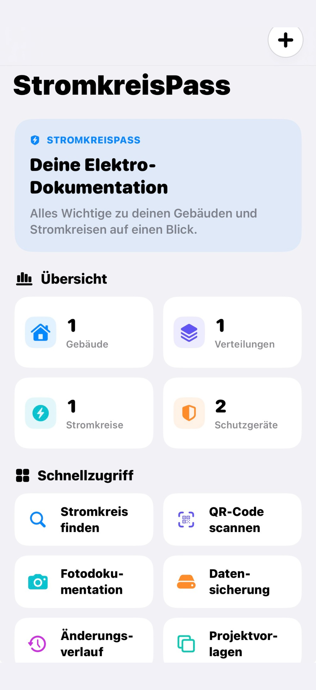
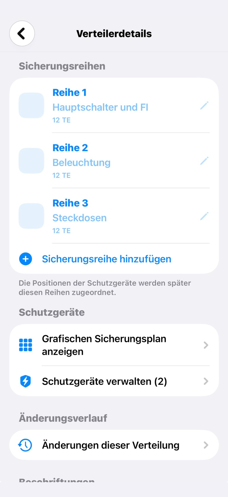
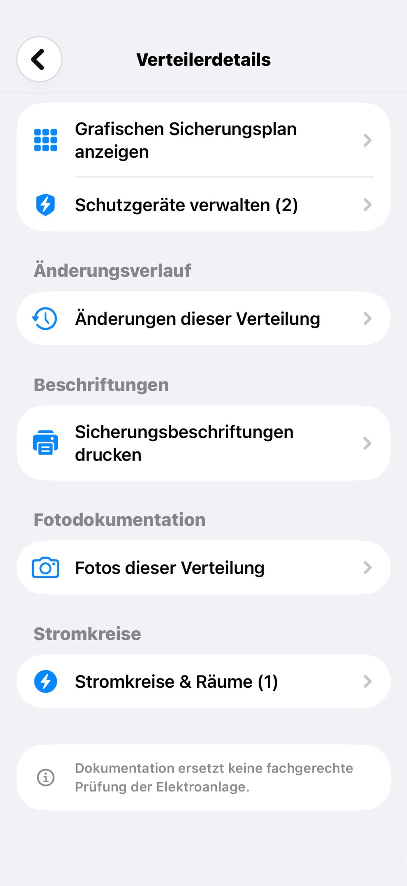
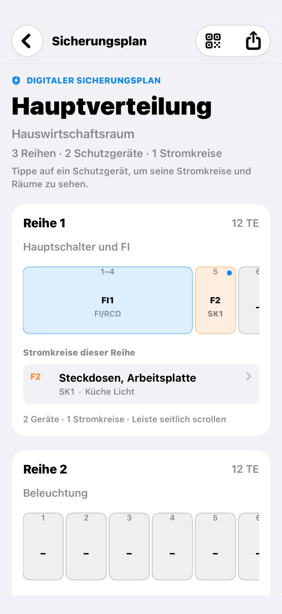

Gebäude & Verteilungen
Gebäude anlegen, Verteilungen organisieren und Sicherungsreihen übersichtlich verwalten.
Gebäude, Elektroverteilungen und Stromkreise übersichtlich erfassen, wiederfinden und dokumentieren. Alles an einem Ort – direkt auf deinem iPhone.

Von der ersten Verteilung bis zur fertigen Datei: StromkreisPass verbindet die wichtigsten Arbeitsschritte in einer klaren Oberfläche.
Gebäude anlegen, Verteilungen organisieren und Sicherungsreihen übersichtlich verwalten.
Schutzgeräte und belegte Positionen in einer verständlichen grafischen Darstellung sehen.
Stromkreise, Räume, Verbraucher und ihre Schutzgeräte dokumentieren.
Verteilungen per QR-Code aufrufen und Stromkreise über die Suche schnell finden.
Fotos direkt aufnehmen und den passenden Gebäuden, Verteilungen oder Stromkreisen zuordnen.
Sicherungspläne und Beschriftungen als PDF, Tabellen als CSV exportieren und Daten sichern.
Originalaufnahmen aus der iPhone-App – ohne nachgebaute Bedienelemente oder erfundene Funktionen.



Nicht mehr lose Notizen und verstreute Bilder – sondern eine digitale Struktur, die du jederzeit wieder aufrufen kannst.
Eine Frage zur App?Starte mit einem eigenen Gebäude oder verwende eine Projektvorlage.
Erfasse Verteilungen, Schutzgeräte, Stromkreise und passende Fotos.
Nutze die Suche, QR-Codes oder gib deine Dokumentation als PDF beziehungsweise CSV aus.
Die Dokumentationsdaten werden im normalen App-Betrieb lokal auf dem iPhone gespeichert. Eine Kontoanmeldung ist nicht nötig. Du entscheidest selbst, wann du Sicherungen erstellst oder Dateien über iOS teilst.
Zur DatenschutzerklärungDie wichtigsten Antworten rund um StromkreisPass.
Nein. Für die grundlegende Nutzung von StromkreisPass ist keine Registrierung erforderlich.
Ja, die Kernfunktionen zur Dokumentation funktionieren offline. Für die Anzeige verlinkter Webseiten oder das Teilen über Onlinedienste kann eine Internetverbindung erforderlich sein.
Du kannst in der App eine Datensicherung erstellen und sie über die iOS-Dateien-App an einem selbst gewählten Ort speichern, beispielsweise in iCloud Drive.
Noch nicht. StromkreisPass 1.0 wird derzeit über Apple TestFlight in einer begrenzten Testphase geprüft.
Nein. Die App unterstützt ausschließlich die Dokumentation. Vorgeschriebene Messungen, Prüfungen und fachliche Bewertungen müssen von qualifizierten Elektrofachkräften durchgeführt werden.
Du testest StromkreisPass oder möchtest einen Fehler melden? Wir freuen uns über nachvollziehbare Hinweise und Anregungen zur Bedienung.
E-Mail schreibenKontakt: info@vooro.de